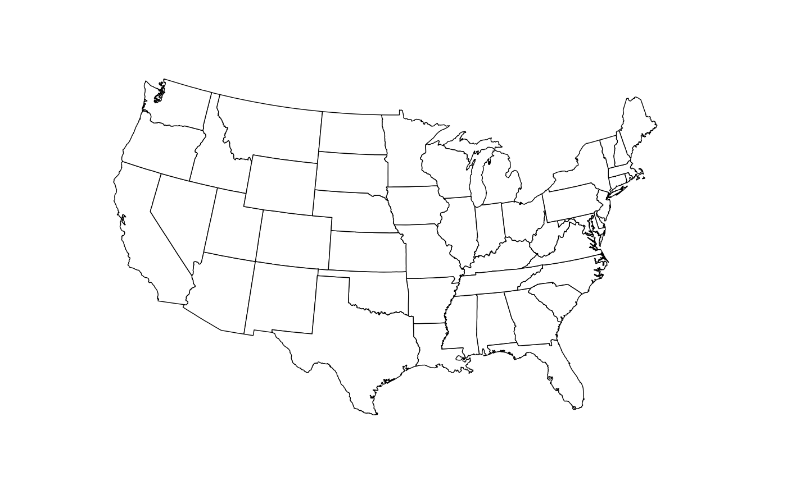

A clean theme that is good for displaying maps from
geom_map().
Examples
library("maps")
#>
#> Attaching package: ‘maps’
#> The following object is masked from ‘package:purrr’:
#>
#> map
library("ggplot2")
us <- fortify(map_data("state"), region = "region")
#> Warning: Arguments in `...` must be used.
#> ✖ Problematic argument:
#> • region = "region"
#> ℹ Did you misspell an argument name?
gg <- ggplot() +
geom_map(
data = us,
map = us,
aes(x = long, y = lat, map_id = region, group = group),
fill = "white",
color = "black",
size = 0.25
) +
coord_map("albers", lat0 = 39, lat1 = 45) +
theme_map()
#> Warning: Using `size` aesthetic for lines was deprecated in ggplot2 3.4.0.
#> ℹ Please use `linewidth` instead.
#> Warning: Ignoring unknown aesthetics: x and y
gg
